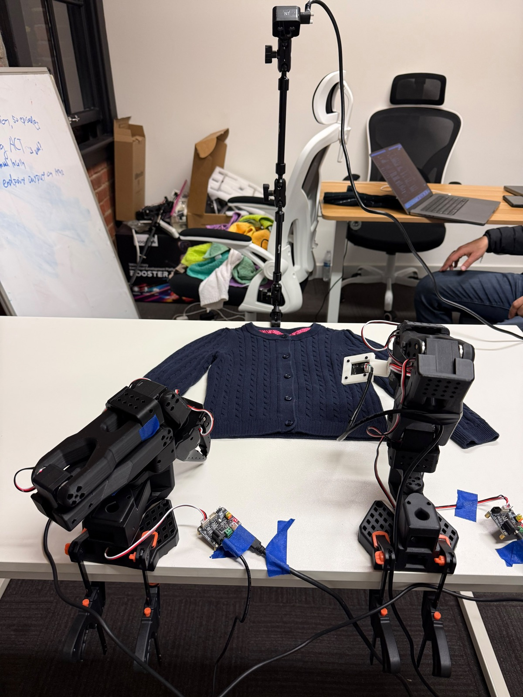
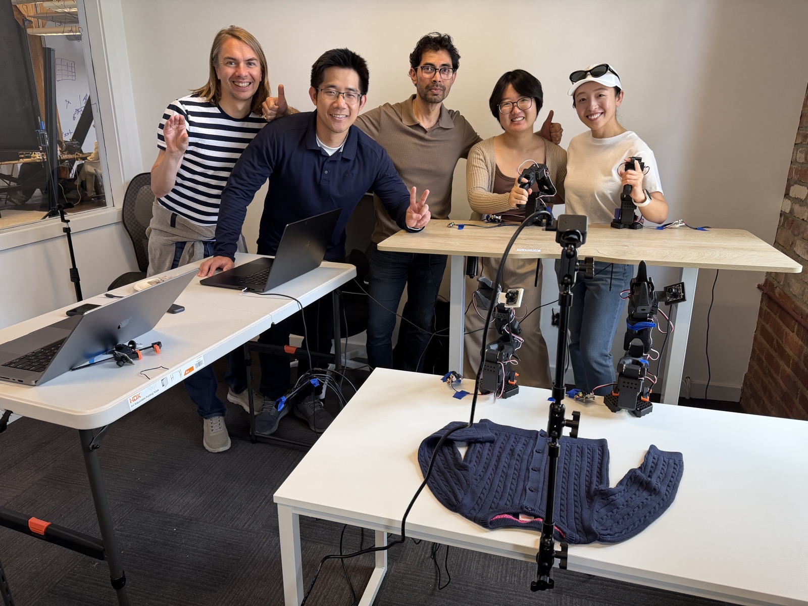
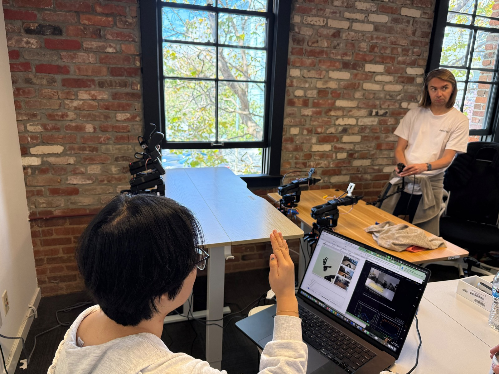

Two SO-101 follower arms fold real cloth (towels and knitwear) end-to-end, driven by imitation-learning policies — ACT, SmolVLA, MolmoAct2, and pi0.5 — trained on teleoperated demonstrations and served from a Modal GPU endpoint that returns whole action chunks instead of one action per network round-trip.
Built at a hackathon with a five-person team: two SO-101 bimanual teleop rigs collecting cloth-folding demonstrations in parallel, merged into a shared dataset, and used to train and compare four different imitation-learning policies on the same task. The end goal was a robot that folds a real garment end-to-end — including spreading it from an unstructured, crumpled starting state.
| Policy | Approach |
|---|---|
| ACT | Trained from scratch, several chunk-size/seed variants |
| SmolVLA | Fine-tuned, frozen vision encoder, action expert only |
| MolmoAct2 | LoRA fine-tune, continuous action mode |
| pi0.5 | Fine-tuned in bfloat16 with gradient checkpointing |


SO-101 recordings are calibrated degrees, but LeRobot's export normalizes to wire units — mixing the two silently trains or evaluates a policy against the wrong pose convention, and was the single biggest source of "the arm just does something weird" failures. Reusing third-party SO-100/SO-101 checkpoints from the Hub is a domain-adaptation problem, not a drop-in: camera key names, left/right assignment, resolution, and normalization range all have to match before fine-tuning on top of one. Visualizing reference frames and joint trajectories side by side with our own rollouts (via Rerun) turned out to be the fastest way to tell a calibration bug apart from a genuine generalization gap.
A policy-agnostic serving layer that reads camera keys, state dimension, and normalization straight from the checkpoint config makes it cheap to A/B four very different policy architectures behind one endpoint. Returning whole action chunks (instead of one action per request) removes network latency from the control loop entirely — the robot never waits on the network mid-motion. And for imitation learning specifically, correctness bugs (unit mismatches, camera mislabeling) look identical to "not enough data" from the outside — always rule out the former with visualization before spending more GPU time on the latter.